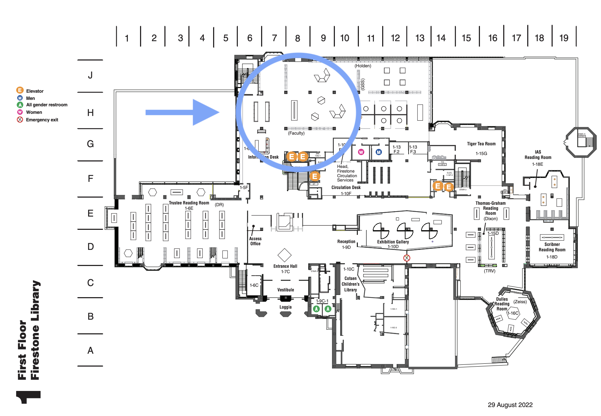
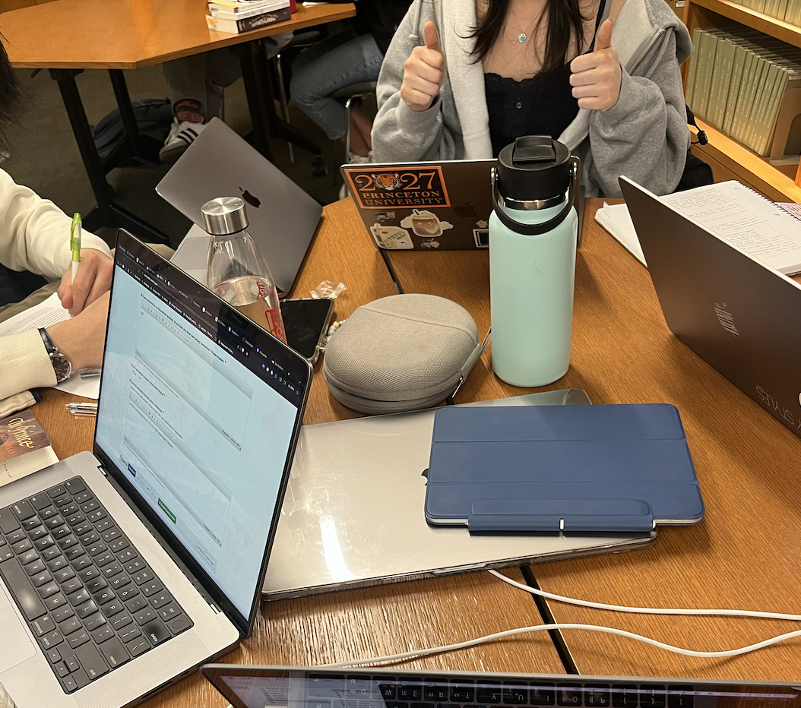

Located on the first floor of the Firestone library, the collaboration area is the first open space after walking in through the lobby. This is a popular location for students.
The collaboration area at Princeton University's Firestone Library offers an inviting and dynamic space for students, researchers, and faculty to come together, exchange ideas, and engage Located within the iconic Firestone Library the collaboration area provides a modern and flexible environment designed to foster creativity and innovation. Equipped with comfortable seating, large communal tables, and advanced technology, the collaboration area encourages group discussions, project brainstorming, and interdisciplinary collaboration. this space offers the ideal setting for productive teamwork. Overall, the collaboration area at Princeton's Firestone Library serves as a hub of creativity, embodying the university's commitment to fostering a vibrant . Whether seeking inspiration, working on group projects, or connecting with peers, students can find inspiration and support in this collaborative space within one of Princeton's most renowned academic institutions.
I am in it right now!
link back to homepage!